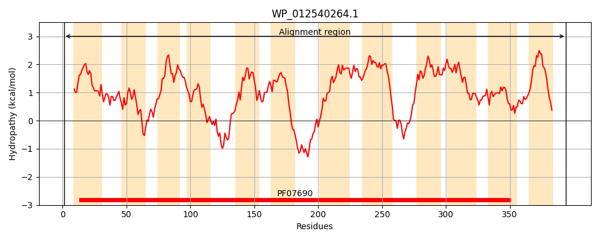
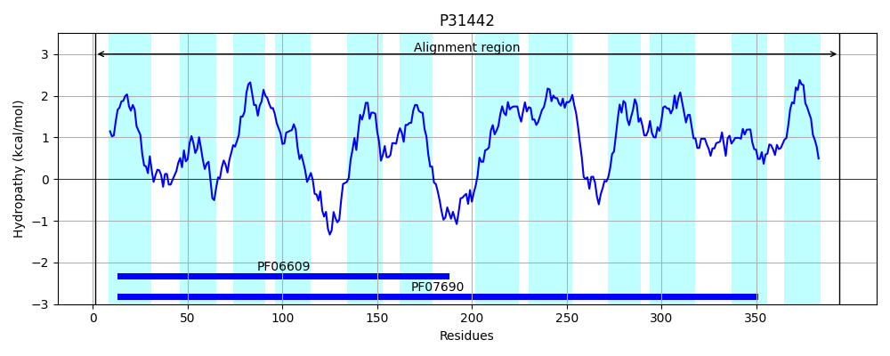
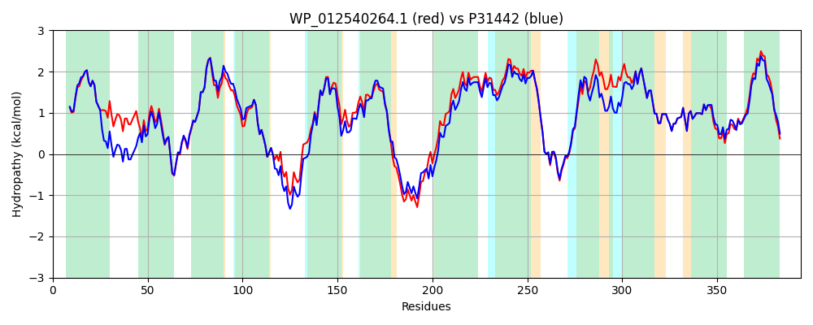

Hit Accession: P31442
Hit TCID: 2.A.1.2.9
Hit Description: gnl|BL_ORD_ID|9769 gnl|TC-DB|P31442|2.A.1.2.9 Multidrug resistance protein D - Escherichia coli.
Mach Len: 394
e:0.000000
Query TMS Count : 12
Hit TMS Count: 12
TMS-Overlap Score: 11.750000
Predicted Substrates:CHEBI:3020;benzalkonium chloride, CHEBI:8984;sodium dodecyl sulfate, CHEBI:5584;hydron, CHEBI:3259;CCCP
BLAST Alignment:
Score: 1805 , Bit scores: 699 bits, E-value: 0.0e+00, Alignment length: 394, Percentage identity: 89
Query: 1 MKRHKNFNLLLMLVLLVAVGQMAQTIYIPAIADMAVALNVREGAVQSVMAAYLLTYGISQLFYGPLSDRVGRRPVILVGMSIFMLATLVAITTHSLPVLIAASAMQGMGTGVGGVMARTLPRDLYEGAQLRHANSLLNMGILVSPLIAPLLGGILDTLWSWRACYAFLLVLCAGVTFSMAKWMPETRPEGAPRTKLLTSYKTLFGTGAFNCYLLMLIGGLAGIAVFEACSGVLMGAVLGLSSMAVSILFILPIPAAFFGAWFAGRPNKRFPTLMWQSVICCLLAGLMMWIPGLLGIMTVWTLLVPAALFFFGAGMLFPLATSGAMEPFPFLAGTAGALVGGLQNIGSGVLAWLSAMMPQTGQGSLGLLMMLMGLLILLCWLPLASRFTHHQQPV 394
MKR +N NLLLMLVLLVAVGQMAQTIYIPAIADMA LNVREGAVQSVM AYLLTYG+SQLFYGP+SDRVGRRPVILVGMSIFMLATLVA+TT SL VLIAASAMQGMGTGVGGVMARTLPRDLYE QLRHANSLLNMGILVSPL+APL+GG+LDT+W+WRACY FLLVLCAGVTFSMA+WMPETRP APRT+LLTSYKTLFG FNCYLLMLIGGLAGIA FEACSGVLMGAVLGLSSM VSILFILPIPAAFFGAWFAGRPNKRF TLMWQSVICCLLAGL+MWIP G+M VWTLLVPAALFFFGAGMLFPLATSGAMEPFPFLAGTAGALVGGLQNIGSGVLA LSAM+PQTGQGSLGLLM LMGLLI+LCWLPLA+R +H QPV
Sbjct: 1 MKRQRNVNLLLMLVLLVAVGQMAQTIYIPAIADMARDLNVREGAVQSVMGAYLLTYGVSQLFYGPISDRVGRRPVILVGMSIFMLATLVAVTTSSLTVLIAASAMQGMGTGVGGVMARTLPRDLYERTQLRHANSLLNMGILVSPLLAPLIGGLLDTMWNWRACYLFLLVLCAGVTFSMARWMPETRPVDAPRTRLLTSYKTLFGNSGFNCYLLMLIGGLAGIAAFEACSGVLMGAVLGLSSMTVSILFILPIPAAFFGAWFAGRPNKRFSTLMWQSVICCLLAGLLMWIPDWFGVMNVWTLLVPAALFFFGAGMLFPLATSGAMEPFPFLAGTAGALVGGLQNIGSGVLASLSAMLPQTGQGSLGLLMTLMGLLIVLCWLPLATRMSHQGQPV 394 | Protein Hydropathy Plots: |
|---|
|  |  |
Pairwise Alignment-Hydropathy Plot:
|
|---|
|  |